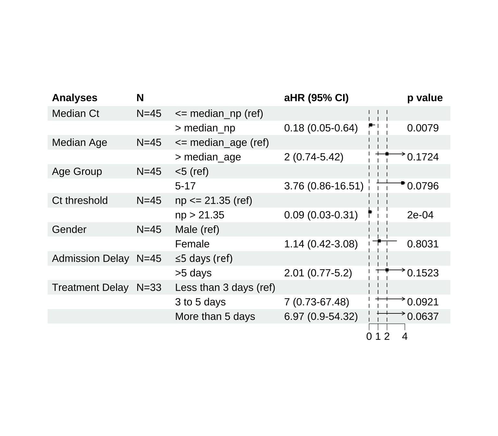

Among the 463 confirmed EVD cases, 62 (13%) were children aged <18 years, admitted between 2018-08-05 and 2019-05-13. Of these pediatric cases, 55% were girls and 29% were under 5 years of age.
A total of 20 deaths were reported in this subgroup, corresponding to a case fatality rate (CFR) of 32%, similar to the overall cohort.
In the following analyses, we focus on demographics, clinical presentation, and outcomes in children, highlighting patterns that may differ from the adult population.
Note: Eleven children had an unknown outcome at discharge.
Figure 1: Population Pyramid by Age and Sex among Children
By Age
| Characteristic | Adult N = 3861 |
Children (<18) N = 621 |
p-value2 |
|---|---|---|---|
| Age at admission | – | – | 0.00 |
| Median (Min, Max) | 33 (18, 71) | 10 (0, 17) | – |
| Age Group | – | – | 0.00 |
| <2 | 0 (0%) | 10 (16%) | – |
| 2-5 | 0 (0%) | 8 (13%) | – |
| 5-12 | 0 (0%) | 20 (32%) | – |
| 12-17 | 0 (0%) | 24 (39%) | – |
| 18+ | 386 (100%) | 0 (0%) | – |
| Gender | – | – | 0.75 |
| Male | 166 (43%) | 28 (45%) | – |
| Female | 220 (57%) | 34 (55%) | – |
| Is the patient pregnant? | 15 (3.9%) | 1 (1.6%) | 0.71 |
| Admission Delay | – | – | 0.62 |
| Median (Min, Max) | 4.0 (0.0, 34.0) | 4.0 (0.0, 39.0) | – |
| Ct (lowest) | – | – | 0.30 |
| Median (Min, Max) | 24 (15, 42) | 23 (16, 40) | – |
| Ct Below 23 | 124 (32%) | 21 (34%) | 0.78 |
| Does the patient have any comorbid conditions? | 8 (2.1%) | 0 (0%) | 0.61 |
| Diabetes | 1 (0.3%) | 0 (0%) | 1.00 |
| HIV | 3 (0.8%) | 0 (0%) | 1.00 |
| Chronic pulmonary disease | 1 (0.3%) | 0 (0%) | 1.00 |
| Bleeding | 33 (8.5%) | 7 (11%) | 0.48 |
| Fever | 8 (2.1%) | 45 (73%) | 0.00 |
| Diarrhoea | 8 (2.1%) | 15 (24%) | 0.00 |
| Shock | 2 (0.5%) | 0 (0%) | 1.00 |
| Confusion | 1 (0.3%) | 0 (0%) | 1.00 |
| Renal impairment | 41 (11%) | 3 (4.8%) | 0.16 |
| Rhabdomyolysis | 17 (4.4%) | 2 (3.2%) | 1.00 |
| Severe hypoglycemia | 6 (1.6%) | 1 (1.6%) | 1.00 |
| Hyperkaliemia | 5 (1.3%) | 2 (3.2%) | 0.25 |
| Hypokaliemia | 10 (2.6%) | 1 (1.6%) | 1.00 |
| Platelets (x10⁹/L) | – | – | 0.41 |
| Median (Min, Max) | 168 (27, 385) | 106 (88, 164) | – |
| Haemoglobin (g/L) | – | – | 0.40 |
| Median (Min, Max) | 13.30 (9.00, 17.90) | 12.00 (10.60, 13.80) | – |
| Ebola experimental treatment at admission | 170 (44%) | 25 (40%) | 0.58 |
| Type of Ebola experimental treament at admission | – | – | 0.37 |
| REGN3470-3471-3479 | 43 (11%) | 4 (6.5%) | – |
| Remdesivir (GS-5734) | 53 (14%) | 5 (8.1%) | – |
| Zmapp | 7 (1.8%) | 1 (1.6%) | – |
| mAb114 | 64 (17%) | 15 (24%) | – |
| None | 219 (57%) | 37 (60%) | – |
| Days from Treament Initiation | – | – | 0.38 |
| Median (Min, Max) | 4.0 (-361.0, 36.0) | 5.0 (0.0, 32.0) | – |
| Delay from Treament | – | – | 0.36 |
| Less than 3 days | 69 (23%) | 11 (24%) | – |
| 3 to 5 days | 84 (28%) | 8 (18%) | – |
| More than 5 days | 150 (50%) | 26 (58%) | – |
| Ebola experimental treatment | 306 (79%) | 45 (73%) | 0.23 |
| Type of Ebola experimental treament | – | – | 0.20 |
| REGN3470-3471-3479 | 93 (24%) | 11 (18%) | – |
| Remdesivir (GS-5734) | 113 (29%) | 12 (19%) | – |
| Zmapp | 22 (5.7%) | 5 (8.1%) | – |
| mAb114 | 78 (20%) | 17 (27%) | – |
| None | 80 (21%) | 17 (27%) | – |
| Antibacterial treatment | 326 (84%) | 52 (84%) | 0.91 |
| Antimalarial treatment | 285 (74%) | 43 (69%) | 0.46 |
| Oral/orogastric fluids | 64 (17%) | 13 (21%) | 0.40 |
| Blood transfusion | 1 (0.3%) | 2 (3.2%) | 0.05 |
| Outcome at discharge | – | – | 0.48 |
| Death | 126 (33%) | 20 (32%) | – |
| Full recovery with sequelae | 1 (0.3%) | 0 (0%) | – |
| Full recovery without sequelae | 216 (56%) | 31 (50%) | – |
| Referred to another facility | 2 (0.5%) | 0 (0%) | – |
| Unknown | 41 (11%) | 11 (18%) | – |
| 1 n (%) | |||
| 2 Wilcoxon rank sum test; Fisher’s exact test; Pearson’s Chi-squared test | |||
By Outcome
| Characteristic | Deceased N = 201 |
Recovered N = 311 |
p-value2 |
|---|---|---|---|
| Age at admission | – | – | 0.01 |
| Median (Min, Max) | 13.5 (3.0, 17.0) | 7.0 (0.0, 17.0) | – |
| Age Group | – | – | 0.07 |
| <2 | 0 (0%) | 6 (19%) | – |
| 2-5 | 2 (10%) | 5 (16%) | – |
| 5-12 | 6 (30%) | 11 (35%) | – |
| 12-17 | 12 (60%) | 9 (29%) | – |
| Gender | – | – | 0.47 |
| Male | 7 (35%) | 14 (45%) | – |
| Female | 13 (65%) | 17 (55%) | – |
| Is the patient pregnant? | 0 (0%) | 1 (3.2%) | 1.00 |
| Admission Delay | – | – | 0.00 |
| Median (Min, Max) | 7 (1, 39) | 2 (0, 32) | – |
| Ct (lowest) | – | – | 0.00 |
| Median (Min, Max) | 19 (16, 29) | 27 (19, 40) | – |
| Ct Below 23 | 11 (55%) | 6 (19%) | 0.01 |
| Bleeding | 4 (20%) | 2 (6.5%) | 0.19 |
| Fever | 17 (85%) | 23 (74%) | 0.49 |
| Diarrhoea | 7 (35%) | 6 (19%) | 0.21 |
| Renal impairment | 3 (15%) | 0 (0%) | 0.05 |
| Rhabdomyolysis | 2 (10%) | 0 (0%) | 0.15 |
| Severe hypoglycemia | 0 (0%) | 1 (3.2%) | 1.00 |
| Platelets (x10⁹/L) | – | – | 0.67 |
| Median (Min, Max) | 135 (106, 164) | 88 (88, 88) | – |
| Haemoglobin (g/L) | – | – | 1.00 |
| Median (Min, Max) | 12.20 (10.60, 13.80) | 12.00 (12.00, 12.00) | – |
| Hyperkaliemia | 1 (5.0%) | 1 (3.2%) | 1.00 |
| Hypokaliemia | 0 (0%) | 1 (3.2%) | 1.00 |
| Ebola experimental treatment at admission | 10 (50%) | 10 (32%) | 0.21 |
| Type of Ebola experimental treament at admission | – | – | 0.02 |
| REGN3470-3471-3479 | 1 (5.0%) | 3 (9.7%) | – |
| Remdesivir (GS-5734) | 5 (25%) | 0 (0%) | – |
| Zmapp | 1 (5.0%) | 0 (0%) | – |
| mAb114 | 3 (15%) | 7 (23%) | – |
| None | 10 (50%) | 21 (68%) | – |
| Delay from Treament | – | – | 0.04 |
| Less than 3 days | 1 (5.6%) | 8 (40%) | – |
| 3 to 5 days | 4 (22%) | 3 (15%) | – |
| More than 5 days | 13 (72%) | 9 (45%) | – |
| Days from Treament Initiation | – | – | 0.02 |
| Median (Min, Max) | 7.0 (2.0, 28.0) | 3.0 (0.0, 32.0) | – |
| Ebola experimental treatment | 18 (90%) | 20 (65%) | 0.04 |
| Type of Ebola experimental treament | – | – | 0.00 |
| REGN3470-3471-3479 | 2 (10%) | 8 (26%) | – |
| Remdesivir (GS-5734) | 9 (45%) | 3 (9.7%) | – |
| Zmapp | 4 (20%) | 1 (3.2%) | – |
| mAb114 | 3 (15%) | 8 (26%) | – |
| None | 2 (10%) | 11 (35%) | – |
| Antibacterial treatment | 17 (85%) | 26 (84%) | 1.00 |
| Antimalarial treatment | 13 (65%) | 21 (68%) | 0.84 |
| Oral/orogastric fluids | 2 (10%) | 9 (29%) | 0.17 |
| Blood transfusion | 2 (10%) | 0 (0%) | 0.15 |
| 1 n (%) | |||
| 2 Wilcoxon rank sum test; Fisher’s exact test; Pearson’s Chi-squared test; Wilcoxon rank sum exact test | |||
| Characteristic | Male N = 281 |
Female N = 341 |
p-value2 |
|---|---|---|---|
| Age at admission | – | – | 0.07 |
| Median (Min, Max) | 7.5 (0.0, 17.0) | 12.0 (0.0, 17.0) | – |
| Age Group | – | – | 0.15 |
| <2 | 6 (21%) | 4 (12%) | – |
| 2-5 | 3 (11%) | 5 (15%) | – |
| 5-12 | 12 (43%) | 8 (24%) | – |
| 12-17 | 7 (25%) | 17 (50%) | – |
| Is the patient pregnant? | 0 (0%) | 1 (2.9%) | 1.00 |
| Admission Delay | – | – | 0.86 |
| Median (Min, Max) | 4 (0, 28) | 4 (0, 39) | – |
| Ct (lowest) | – | – | 0.72 |
| Median (Min, Max) | 24 (16, 40) | 23 (16, 40) | – |
| Ct Below 23 | 11 (39%) | 10 (29%) | 0.41 |
| Bleeding | 2 (7.1%) | 5 (15%) | 0.44 |
| Fever | 18 (64%) | 27 (79%) | 0.18 |
| Diarrhoea | 8 (29%) | 7 (21%) | 0.47 |
| Renal impairment | 1 (3.6%) | 2 (5.9%) | 1.00 |
| Rhabdomyolysis | 2 (7.1%) | 0 (0%) | 0.20 |
| Severe hypoglycemia | 0 (0%) | 1 (2.9%) | 1.00 |
| Platelets (x10⁹/L) | – | – | 0.67 |
| Median (Min, Max) | 164 (164, 164) | 97 (88, 106) | – |
| Haemoglobin (g/L) | – | – | 0.67 |
| Median (Min, Max) | 10.60 (10.60, 10.60) | 12.90 (12.00, 13.80) | – |
| Hyperkaliemia | 2 (7.1%) | 0 (0%) | 0.20 |
| Hypokaliemia | 0 (0%) | 1 (2.9%) | 1.00 |
| Ebola experimental treatment at admission | 9 (32%) | 16 (47%) | 0.23 |
| Type of Ebola experimental treament at admission | – | – | 0.39 |
| REGN3470-3471-3479 | 2 (7.1%) | 2 (5.9%) | – |
| Remdesivir (GS-5734) | 3 (11%) | 2 (5.9%) | – |
| Zmapp | 0 (0%) | 1 (2.9%) | – |
| mAb114 | 4 (14%) | 11 (32%) | – |
| None | 19 (68%) | 18 (53%) | – |
| Delay from Treament | – | – | 0.16 |
| Less than 3 days | 6 (32%) | 5 (19%) | – |
| 3 to 5 days | 1 (5.3%) | 7 (27%) | – |
| More than 5 days | 12 (63%) | 14 (54%) | – |
| Days from Treament Initiation | – | – | 0.85 |
| Median (Min, Max) | 5.0 (0.0, 28.0) | 5.5 (1.0, 32.0) | – |
| Ebola experimental treatment | 19 (68%) | 26 (76%) | 0.45 |
| Type of Ebola experimental treament | – | – | 0.57 |
| REGN3470-3471-3479 | 5 (18%) | 6 (18%) | – |
| Remdesivir (GS-5734) | 7 (25%) | 5 (15%) | – |
| Zmapp | 1 (3.6%) | 4 (12%) | – |
| mAb114 | 6 (21%) | 11 (32%) | – |
| None | 9 (32%) | 8 (24%) | – |
| Antibacterial treatment | 24 (86%) | 28 (82%) | 1.00 |
| Antimalarial treatment | 18 (64%) | 25 (74%) | 0.43 |
| Oral/orogastric fluids | 7 (25%) | 6 (18%) | 0.48 |
| Blood transfusion | 1 (3.6%) | 1 (2.9%) | 1.00 |
| Outcome at discharge | – | – | 0.34 |
| Death | 7 (25%) | 13 (38%) | – |
| Full recovery without sequelae | 14 (50%) | 17 (50%) | – |
| Unknown | 7 (25%) | 4 (12%) | – |
| 1 n (%) | |||
| 2 Wilcoxon rank sum test; Fisher’s exact test; Pearson’s Chi-squared test; Wilcoxon rank sum exact test | |||
| Characteristic | Less than 3 days N = 111 |
3 to 5 days N = 81 |
More than 5 days N = 261 |
p-value2 |
|---|---|---|---|---|
| Age at admission | – | – | – | 0.00 |
| Median (Min, Max) | 3.0 (0.0, 14.0) | 16.0 (0.3, 17.0) | 13.0 (1.9, 17.0) | – |
| Age Group | – | – | – | 0.01 |
| <2 | 5 (45%) | 1 (13%) | 1 (3.8%) | – |
| 2-5 | 3 (27%) | 0 (0%) | 3 (12%) | – |
| 5-12 | 2 (18%) | 2 (25%) | 7 (27%) | – |
| 12-17 | 1 (9.1%) | 5 (63%) | 15 (58%) | – |
| Gender | – | – | – | 0.16 |
| Male | 6 (55%) | 1 (13%) | 12 (46%) | – |
| Female | 5 (45%) | 7 (88%) | 14 (54%) | – |
| Is the patient pregnant? | 0 (0%) | 1 (13%) | 0 (0%) | 0.18 |
| Admission Delay | – | – | – | 0.00 |
| Median (Min, Max) | 1 (0, 2) | 3 (1, 4) | 7 (3, 39) | – |
| Ct (lowest) | – | – | – | 0.15 |
| Median (Min, Max) | 34 (17, 37) | 26 (16, 29) | 20 (16, 40) | – |
| Ct Below 23 | 3 (27%) | 2 (25%) | 11 (42%) | 0.52 |
| Bleeding | 0 (0%) | 1 (13%) | 6 (23%) | 0.27 |
| Fever | 7 (64%) | 5 (63%) | 21 (81%) | 0.41 |
| Diarrhoea | 0 (0%) | 2 (25%) | 9 (35%) | 0.07 |
| Renal impairment | 0 (0%) | 1 (13%) | 2 (7.7%) | 0.75 |
| Rhabdomyolysis | 0 (0%) | 0 (0%) | 2 (7.7%) | 1.00 |
| Severe hypoglycemia | – | – | – | – |
| 0 | 11 (100%) | 8 (100%) | 26 (100%) | – |
| Platelets (x10⁹/L) | – | – | – | 0.22 |
| Median (Min, Max) | -- | 88 (88, 88) | 135 (106, 164) | – |
| Haemoglobin (g/L) | – | – | – | 1.00 |
| Median (Min, Max) | -- | 12.00 (12.00, 12.00) | 12.20 (10.60, 13.80) | – |
| Hyperkaliemia | 1 (9.1%) | 0 (0%) | 1 (3.8%) | 0.67 |
| Hypokaliemia | 0 (0%) | 1 (13%) | 0 (0%) | 0.18 |
| Days from Treament Initiation | – | – | – | 0.00 |
| Median (Min, Max) | 2.0 (0.0, 2.0) | 3.0 (3.0, 4.0) | 7.0 (5.0, 32.0) | – |
| Type of Ebola experimental treament | – | – | – | 0.26 |
| REGN3470-3471-3479 | 5 (45%) | 2 (25%) | 4 (15%) | – |
| Remdesivir (GS-5734) | 1 (9.1%) | 3 (38%) | 8 (31%) | – |
| Zmapp | 0 (0%) | 0 (0%) | 5 (19%) | – |
| mAb114 | 5 (45%) | 3 (38%) | 9 (35%) | – |
| None | 0 (0%) | 0 (0%) | 0 (0%) | – |
| Antibacterial treatment | 9 (82%) | 8 (100%) | 20 (77%) | 0.48 |
| Antimalarial treatment | 7 (64%) | 7 (88%) | 15 (58%) | 0.37 |
| Oral/orogastric fluids | 4 (36%) | 2 (25%) | 2 (7.7%) | 0.07 |
| Blood transfusion | 0 (0%) | 0 (0%) | 1 (3.8%) | 1.00 |
| Outcome at discharge | – | – | – | 0.13 |
| Death | 1 (9.1%) | 4 (50%) | 13 (50%) | – |
| Full recovery without sequelae | 8 (73%) | 3 (38%) | 9 (35%) | – |
| Unknown | 2 (18%) | 1 (13%) | 4 (15%) | – |
| 1 n (%) | ||||
| 2 Kruskal-Wallis rank sum test; Fisher’s exact test; NA | ||||
| Characteristic | Above 23 N = 241 |
Below 23 N = 211 |
p-value2 |
|---|---|---|---|
| Age at admission | – | – | 0.38 |
| Median (Min, Max) | 7.0 (0.0, 17.0) | 8.0 (1.9, 17.0) | – |
| Age Group | – | – | 0.20 |
| <2 | 7 (29%) | 1 (4.8%) | – |
| 2-5 | 3 (13%) | 4 (19%) | – |
| 5-12 | 8 (33%) | 9 (43%) | – |
| 12-17 | 6 (25%) | 7 (33%) | – |
| Gender | – | – | 0.87 |
| Male | 12 (50%) | 11 (52%) | – |
| Female | 12 (50%) | 10 (48%) | – |
| Is the patient pregnant? | 0 (0%) | 1 (4.8%) | 0.47 |
| Admission Delay | – | – | 0.00 |
| Median (Min, Max) | 2 (0, 32) | 7 (0, 28) | – |
| Ct (lowest) | – | – | 0.00 |
| Median (Min, Max) | 29 (23, 40) | 19 (16, 23) | – |
| Ct Below 23 | 0 (0%) | 21 (100%) | 0.00 |
| Bleeding | 2 (8.3%) | 3 (14%) | 0.65 |
| Fever | 16 (67%) | 18 (86%) | 0.14 |
| Diarrhoea | 4 (17%) | 7 (33%) | 0.19 |
| Renal impairment | 0 (0%) | 1 (4.8%) | 0.47 |
| Rhabdomyolysis | 0 (0%) | 2 (9.5%) | 0.21 |
| Severe hypoglycemia | 0 (0%) | 1 (4.8%) | 0.47 |
| Platelets (x10⁹/L) | – | – | – |
| Median (Min, Max) | -- | 126 (88, 164) | – |
| Haemoglobin (g/L) | – | – | – |
| Median (Min, Max) | -- | 11.30 (10.60, 12.00) | – |
| Hyperkaliemia | 1 (4.2%) | 1 (4.8%) | 1.00 |
| Hypokaliemia | 0 (0%) | 1 (4.8%) | 0.47 |
| Ebola experimental treatment at admission | 8 (33%) | 10 (48%) | 0.33 |
| Type of Ebola experimental treament at admission | – | – | 0.17 |
| REGN3470-3471-3479 | 2 (8.3%) | 1 (4.8%) | – |
| Remdesivir (GS-5734) | 0 (0%) | 4 (19%) | – |
| Zmapp | 0 (0%) | 0 (0%) | – |
| mAb114 | 6 (25%) | 5 (24%) | – |
| None | 16 (67%) | 11 (52%) | – |
| Delay from Treament | – | – | 0.12 |
| Less than 3 days | 6 (43%) | 3 (19%) | – |
| 3 to 5 days | 4 (29%) | 2 (13%) | – |
| More than 5 days | 4 (29%) | 11 (69%) | – |
| Days from Treament Initiation | – | – | 0.05 |
| Median (Min, Max) | 3.0 (0.0, 32.0) | 6.0 (0.0, 28.0) | – |
| Ebola experimental treatment | 14 (58%) | 16 (76%) | 0.20 |
| Type of Ebola experimental treament | – | – | 0.45 |
| REGN3470-3471-3479 | 4 (17%) | 4 (19%) | – |
| Remdesivir (GS-5734) | 3 (13%) | 6 (29%) | – |
| Zmapp | 0 (0%) | 1 (4.8%) | – |
| mAb114 | 7 (29%) | 5 (24%) | – |
| None | 10 (42%) | 5 (24%) | – |
| Antibacterial treatment | 22 (92%) | 19 (90%) | 1.00 |
| Antimalarial treatment | 20 (83%) | 14 (67%) | 0.19 |
| Oral/orogastric fluids | 7 (29%) | 5 (24%) | 0.69 |
| Blood transfusion | 0 (0%) | 1 (4.8%) | 0.47 |
| Outcome at discharge | – | – | 0.01 |
| Death | 3 (13%) | 11 (52%) | – |
| Full recovery without sequelae | 17 (71%) | 6 (29%) | – |
| Unknown | 4 (17%) | 4 (19%) | – |
| 1 n (%) | |||
| 2 Wilcoxon rank sum test; Fisher’s exact test; Pearson’s Chi-squared test; NA | |||
To understand the temporal dynamics of the outbreak, we plotted weekly case counts, stratified by sex and by outcome. This analysis provides insights into the timing of admissions, and the distribution of deaths over time during the outbreak from Aug 5, 2018 to May 13, 2019.
Weekly Cases by Sex
Weekly Cases by Outcome
To explore outbreak dynamics, we examined daily counts of confirmed Ebola Virus Disease (EVD) cases and their corresponding case fatality rates (CFR) over time.
This visualization shows how the number of new admissions and the proportion of fatal outcomes evolved by date of symptom onset or date of admission throughout the North Kivu outbreak.
Over time
Figure 2: Cases and CFR over time
From Admission
Figure 3: Cases and CFR from Admission
Among the 62 pediatric cases, symptoms were generally less frequent than in the overall cohort, though notable exceptions were observed.
When stratified by outcome:
- Children who died had higher proportions of anorexia (85%), fatigue/weakness (95%), and difficulty breathing (40%) compared with those who recovered, suggesting early clinical severity is associated with poorer outcomes.
Overall, children tended to exhibit a milder symptom profile compared to the entire cohort, with fewer instances of severe clinical signs. However, certain symptoms, such as anorexia, fatigue/weakness, and difficulty breathing, were more commonly observed among children who did not survive.
The plots below visualize these patterns, highlighting both the overall prevalence and outcome-specific differences.
Overall Prevalence
(#fig:sx_overall)Symptoms Prevalence
By Outcome
(#fig:sx_outcome)Symptoms Prevalence by Outcome
Overall, children exhibited few clinical signs compared to the entire cohort, with bleeding (8.86%) and conjunctival injection/bleeding (6.48%) being the most frequently observed. Other signs, such as jaundice, oedema, and rash, were rare or absent.
Among children who died, bleeding was observed in 20% and conjunctival injection/bleeding in 5%, whereas these signs were less frequent among survivors.
The plots below visualize these patterns, highlighting both the overall prevalence and outcome-specific differences.
Overall Prevalence
(#fig:clin_all)Prevalence of Clinical Signs
By Outcome
(#fig:clin_outcome)Prevalence of Clinical Signs by Outcome
Among children (<18 years) with confirmed EVD, early diagnosis and admission remain critical for survival. Ct values from RT-PCR testing on nasopharyngeal or blood samples at admission were used as a proxy for viral load, with lower Ct values reflecting higher viral burden.
We evaluated the relationship between Ct values, admission delay (days from symptom onset to ETC admission), and patient outcomes (survived vs. deceased) in this pediatric cohort. Ct values were compared between outcome groups using Welch’s t-test, and their association with admission delay was assessed with linear regression. Analyses were conducted in R (v4.4.1) using ggplot2, dplyr, and base stats.
Number of Patients
Figure 4: Number of Patients by Outcome and Admission Delay
Proportion
Figure 5: Proportion of Patients by Outcome and Admission Delay
The boxplot below 6 compares admission delays between children who recovered and those who died during the North Kivu outbreak. Overall, patients with fatal outcomes were admitted later than survivors:
Deceased children (n=20) had a median admission delay of 7 days (range 1-39)
Recovered children (n=31) had a median admission delay of 2 days (range 1-5)
Figure 6: Admission Delay by Outcome
The cycle threshold (Ct) value obtained from RT-PCR at admission reflects the viral load of Ebola virus RNA with lower Ct values indicating higher viral loads. Understanding the relationship between Ct, disease outcome, and clinical course provides key insights into disease severity and prognosis.
Analyses in this section explore:
Cases and Case Fatality Rate (CFR) by Ct
Figure 7: Cases and CFR by Ct
Ct at admission by Outcome
Figure 8: Ct at admission by Outcome
Ct and Admission Delay
Figure 9: Ct and Admission Delay
Together, these analyses provide an integrated view of how viral burden at presentation and over time correlates with clinical outcomes during the North Kivu EVD outbreak.
We assessed the occurrence of organ failures among children with EVD, stratified by outcome (death vs. recovery). Organ failures were inferred from laboratory results (see Overall section).
Overall, children experienced fewer severe complications compared to the entire cohort. Renal impairment (15%) and rhabdomyolysis (10%) were the most frequently observed severe laboratory abnormalities among pediatric cases. Hyperkaliemia and other metabolic disturbances were uncommon.
The plots below visualize the distribution of organ failures and bleeding by outcome.
Organ failures
Figure 10: Organ failures
Bleeding
Figure 11: Bleeding Sites
We examined the distribution of experimental treatments administered to patients and their corresponding clinical outcomes.
Among children (<18 years) with confirmed EVD, mortality varied by experimental treatment. The highest proportion of deaths occurred in those receiving Remdesivir (GS-5734, 45%), while lower death rates were observed with Zmapp (20%) and mAb114 (15%).
Full recovery without sequelae was most frequent in children treated with REGN3470-3471-3479 (≈26%) and mAb114 (≈26%). A notable proportion of outcomes remained unknown, particularly for children receiving mAb114 (≈55%).
The interactive drill-down pie chart below illustrates the proportion of patients receiving each treatment and, within each treatment group, the proportion who recovered with and without sequeale versus died.
Figure 12: Distribution of Experimental Treatments and Patient Outcomes
As performed in the entire cohort, we estimated the probability of survival over time using a Weibull proportional hazards model.
Survival curves were stratified by multiple key variables to assess their association with time-to-event outcomes.
By experimental treatment
By Ct threshold
By Admission delay
By Treatment Delay
By Age Group
By Sex
To summarize results visually, we produced forest plots showing aHRs with 95% CIs for each covariate. See 13. Reference categories were indicated for categorical variables, and p-values were reported alongside hazard ratios. These forest plots provide an integrated view of survival associations across all stratifications, enabling comparison of treatment effects, viral load (Ct), demographic factors, and admission timing.
Median predicted survival times were also estimated using the fitted Weibull models, and tabulated by strata to complement the forest plot visualizations.
See also analyses for the entire cohort.
All analyses were performed in R version 4.4.1.

Figure 13: Forest Plots of Weibull Model Estimates for Time-to-Event Outcome
As performed in the entire cohort, adjusted risk ratios (aRR) and 95% confidence intervals were estimated using multivariable Poisson regression with robust standard errors. Predictors for each outcome and complication were selected based on the stepwise modeling workflow described above.
The resulting aRRs are displayed in interactive panels for different outcomes: death, death among treated patients, and complications including renal failure and bleeding. Each table presents the adjusted risk ratio and 95% confidence interval for all non-intercept predictors.
Analyses were implemented in R using the glm() function with a log link, robust standard errors from the sandwich package, and exponentiated coefficients to obtain interpretable risk ratios.
Death Outcome
| Variable | Relative Risk (95% CI) | Direction |
|---|---|---|
| CT at Admission | 0.85 (0.74-0.98) | ⬇ |
| Remdesivir (GS-5734) | 1.75 (0.62-4.92) | ↔ |
| Admission Delay | 1.02 (0.99-1.04) | ↔ |
| Chest Pain | 1.3 (0.4-4.18) | ↔ |
| Difficulty breathing | 1.2 (0.62-2.34) | ↔ |
| Myalgia / Body Pain | 1.81 (1.02-3.18) | ⬆ |
| Nausea/Vomiting | 2.05 (0.89-4.71) | ↔ |
| Zmapp | 1.57 (0.66-3.74) | ↔ |
| mAb114 | 1.97 (0.55-7.08) | ↔ |